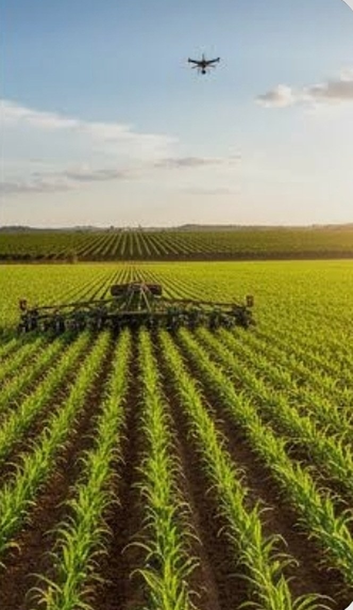
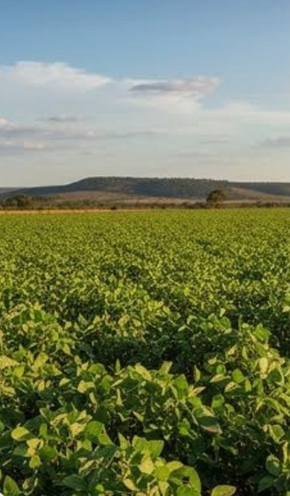
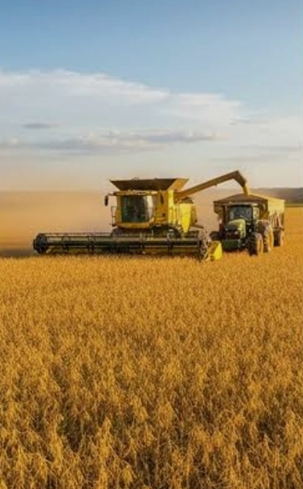

Fertilizantes
Nutrición de base y cobertura para granos, pasturas y cultivos intensivos.
- NPK
- Urea
- MAP · DAP
- KCl
Semillas, fertilizantes y protección de cultivos para cada etapa del plantío, con asesoría técnica en el lote desde la preparación del suelo hasta la cosecha.



Sul América Insumos Agrícolas acerca al productor paraguayo los insumos que necesita en cada etapa del ciclo, con logística propia y técnicos que recorren los lotes.
Nacimos en [ciudad], Paraguay, en [año] y hoy atendemos desde pequeñas chacras familiares hasta grandes operaciones de granos.
Diagnóstico de suelo, recomendación de dosis y seguimiento del cultivo hasta la cosecha.
El insumo llega antes de la ventana de siembra o aplicación, no después.
Acompañamos el rendimiento de cada campaña para ajustar la siguiente.
Líneas de producto organizadas por etapa del ciclo. Las marcas y productos específicos se completarán con el catálogo de la empresa.
Nutrición de base y cobertura para granos, pasturas y cultivos intensivos.
Genética adaptada a cada región y época de siembra, con soporte en la elección de híbridos.
Herbicidas, fungicidas e insecticidas con recomendación técnica y uso responsable.
Micronutrientes, bioestimulantes e inoculantes para cerrar la brecha de rendimiento.
Calcáreo, yeso agrícola y enmiendas para preparar el perfil antes de sembrar.
Ingenieros agrónomos que visitan el lote, monitorean plagas y ajustan el plan de la campaña.
Calendario de referencia para Paraguay. Las ventanas exactas se ajustarán a cada región del país.
| Cultivo | JUL | AGO | SEP | OCT | NOV | DIC | ENE | FEB | MAR | ABR | MAY | JUN |
|---|---|---|---|---|---|---|---|---|---|---|---|---|
| Soja | ||||||||||||
| Maíz | ||||||||||||
| Trigo | ||||||||||||
| Arroz | ||||||||||||
| Girasol | ||||||||||||
| Pasturas |
Operamos en Paraguay, al lado del productor, y llevamos la producción del campo paraguayo a compradores de los principales mercados internacionales.
Alto Paraná · Itapúa · Canindeyú · Caaguazú
Soja, maíz y trigo con destino a Europa, Asia, Medio Oriente y las Américas
Cuéntenos qué cultivo, cuántas hectáreas y en qué región. Compradores internacionales también pueden escribirnos. Un asesor le responde con una propuesta.